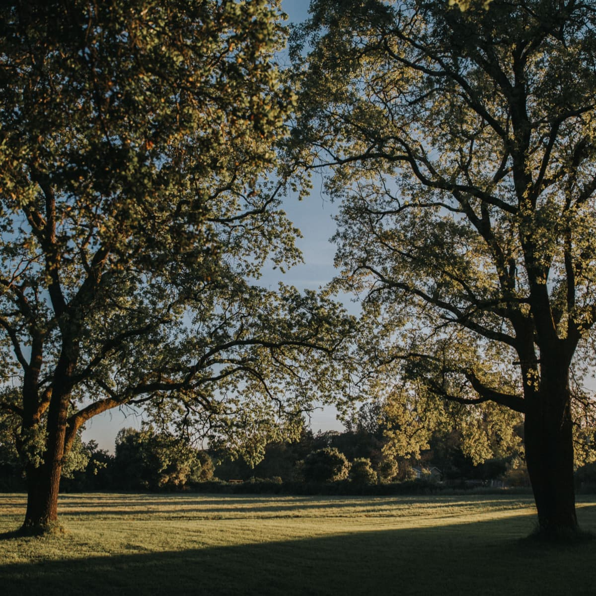
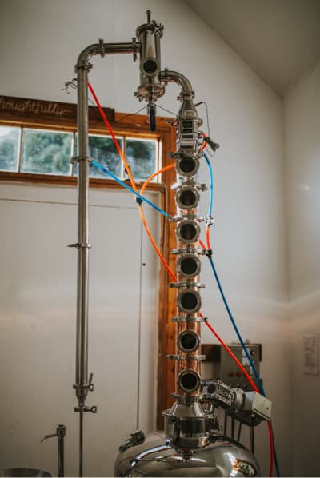
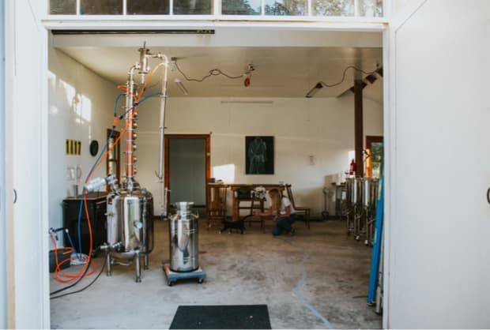
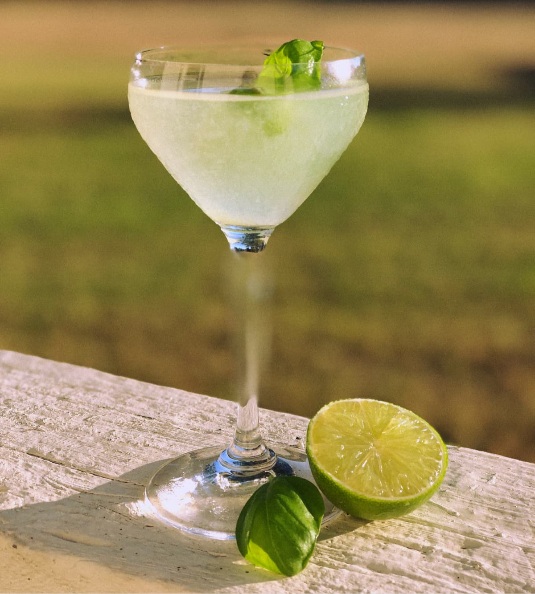

Elevate your spirits...
Thoughtfully

Inspiration


Process
CRAFTED BY HAND, ARTFULLY CRAFTED
We don’t think there is any one thing that makes 1017 unique. It’s a lot of little things…fresh botanicals, vapor infusion, a great base, resting the gin that come together at just the right moments. Capturing those moments is the craft of distilling, and the essence of producing a spirit that is special. You know it from your first sip.
01
02
03
100% pure cane sugar is fermented to create the alcohol base for the gin. Like anything else, great things are built upon solid foundations.
The Distillery. New life for an old barn.
What’s a good distillery without a great cat?

The Basil Gimlet